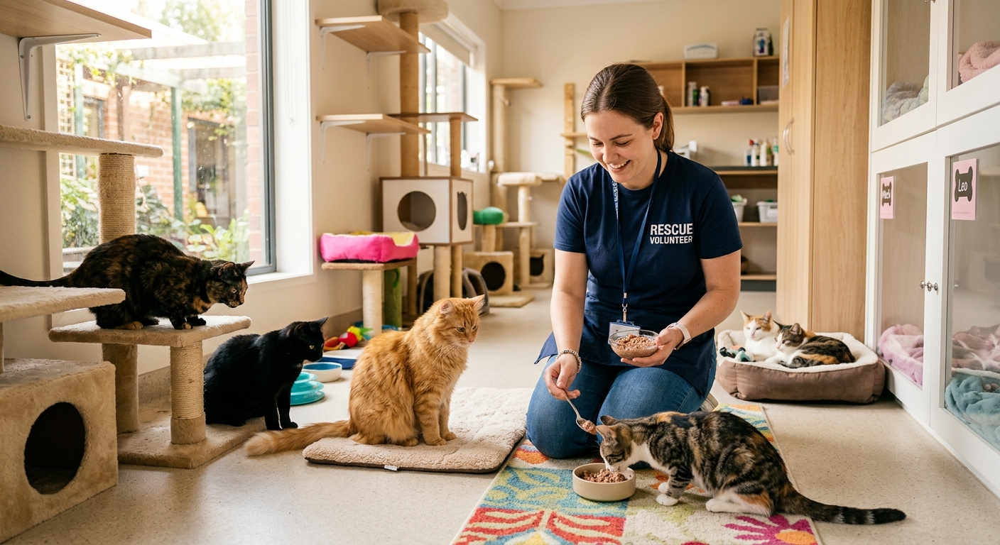
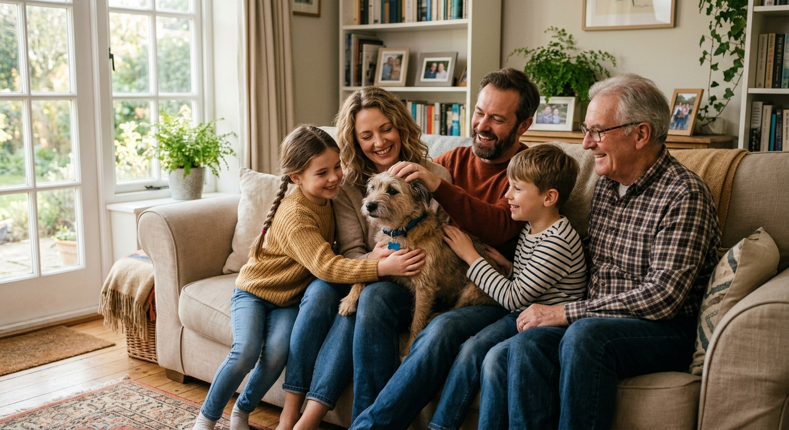
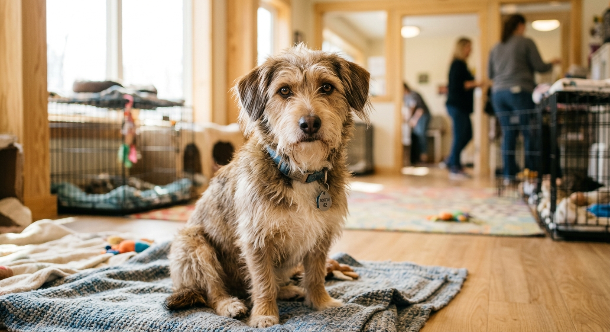

Os abrigos são espaços que acolhem animais em situação de sofrimento e risco nas ruas, ou que são deixados lá por pessoas que não puderam mais cuidar deles. Neles, os animais recebem alimentação, atendimento veterinário e cuidados diários. O objetivo é oferecer segurança e conforto até que cada animal encontre um lar. Entretanto, os abrigos muitas vezes são vistos pela sociedade como um depósito de animais ou local de descarte para animais que se tornaram indesejados pelos tutores.


Adotar com responsabilidade é entender que um animal precisa de tempo, atenção e recursos durante toda a vida. Antes de adotar, é importante avaliar se há espaço adequado, tempo para a rotina de cuidados, condições para arcar com a alimentação e saúde, e se toda a família está de acordo. Também é essencial escolher um animal cujo perfil combina com o seu estilo de vida.
Quando se adota, você oferece uma nova chance a um animal que já passou por situações difíceis, além de abrir espaço no abrigo para que um outro possa ser acolhido. Animais adotados costumam retribuir com companherismo, afeto, e a convivência traz também benefícios para quem adota. Adotar é um gesto que transforma as duas vidas!

O abandono acontece quando um animal é deixado sem os cuidados básicos, nas ruas ou em lugares onde não consegue sobreviver sozinho. Entre as causas estão a falta de planejamento antes da adoção, a falta de recursos para manter o animal, ninhadas indesejadas e a ausência de castração. Esses animais enfrentam fome, doenças e riscos, e muitos acabam em abrigos que já estão no limite. Evitar o abandono começa com a decisão consciente de adotar.